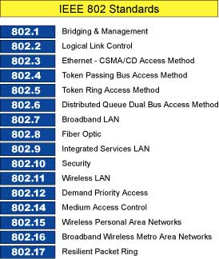

I protocolli ed i servizi specificati negli standard 802 si situano nei due livelli più bassi (fisico e Data Link) nel modello di riferimento a sette strati espresso dallo standard ISO-OSI. I protocolli 802 suddividono lo strato OSI DLL in due sottostrati, chiamati Logical link control (LLC) e Media Access Control (MAC).
L'IEEE 802 LAN/MAN è una commissione dell'IEEE preposta a sviluppare standard per le reti locali (LAN) e per le reti metropolitane (MAN). Più precisamente, gli standard "802" sono dedicati alle reti che hanno pacchetti di lunghezza variabile (sono escluse le reti basate su cella (cellula) di lunghezza fissa ed anche le reti "isocrone", nelle quali i pacchetti sono spediti su base temporale periodica).
La famiglia degli standard IEEE 802 è mantenuta dal comitato "IEEE 802 LAN/MAN Standards Committee" (LMSC). Da questa commissione sono stati definiti gli obiettivi di molti gruppi che hanno sviluppato standard famosi come l'Ethernet, il Token Ring, le WLAN il Bridging e le LAN con Bridge Virtuali, etc... Ogni gruppo è concentrato su una specifica area di ricerca.
Il numero "802" è semplicemente il primo numero libero negli standard IEEE al momento della formazione del comitato, per quanto esso sia qualche volta associato con la data del febbraio 1980, quando fu tenuto il primo incontro del comitato.
Lista standard :
| Standard | Descrizione | |
|---|---|---|
| IEEE 802.1 | Protocolli LAN di più alto livello | |
| IEEE 802.2 | Logical Link Control | |
| IEEE 802.3 | Ethernet | |
| IEEE 802.4 | Token bus (dismesso) | |
| IEEE 802.5 | Token Ring | |
| IEEE 802.6 | DQDB - Distributed Queue Dual Bus (dismesso) | |
| IEEE 802.7 | Broadband TAG (dismesso) | |
| IEEE 802.8 | Fiber Optic TAG (dismesso) | |
| IEEE 802.9 | Integrated Services LAN (dismesso) | |
| IEEE 802.10 | Interoperable LAN Security (dismesso) | |
| IEEE 802.11 | Wireless local area network | |
| IEEE 802.12 | demand priority | |
| IEEE 802.13 | (non utilizzato) | |
| IEEE 802.14 | Cable modem (dismesso) | |
| IEEE 802.15 | Wireless personal area network. | IEEE 802.15.3a: Standard per reti WPAN in via di sviluppo. IEEE 802.15.4a: Standard per reti WPAN in via di sviluppo. |
| IEEE 802.16 | WiMAX - Broadband wireless access | |
| IEEE 802.17 | Resilient packet ring | |
| IEEE 802.18 | Radio Regulatory TAG | |
| IEEE 802.19 | Coexistence TAG | |
| IEEE 802.20 | Mobile Broadband Wireless Access | |
| IEEE 802.21 | Media Independent Handoff | |
| IEEE 802.22 | Wireless Regional Area Network |